So far, we've looked at major and minor, modes of the diatonic scale, harmonic minor scale, and melodic minor scale, the pentatonic scale, symmetric scales, and even maqamat. What else is there? Well, the world of scales is... not unlimited (in 12-TET, assuming octave equivalence), but I guess it's pretty close, right? We could ask the question of how many scales there are. But that wouldn't necessarily be a useful question to ask: is a single note a scale? Really, we're asking how many possible subsets there are of the 12 chromatic notes, up to transposition. And the answer is actually easy: 2049. This is assuming that any subset can reasonably be a scale, including the empty set! So, without loss of generality, let's put the starting note on C. Now, since C is the root, any two distinct sets of other notes will have to yield distinct scales. For example, if you pick the other notes to be D E F G A B, you have C major. If you pick the other notes to be D E F G A Bb, you have C mixolydian. It could be F major too, but since we've decided that C is the starting note, only C mixolydian counts, and the two scales are different. They belong to the same modal family in that they both have the same intervals in the same order, but we're considering them to be different scales. So every subset of the 11 other notes will form a distinct scale; there are 2^11 = 2048 of those. Add the empty scale and we have 2049. Simple!
John Cage, 4'33". Also, any music for unpitched percussion.
No, they are not, but you know what, I'll leave that up to you to decide. There's a nifty tool to explore subsets of the chromatic scale, Ian Ring's A Study of Scales, that explores them in an interesting way, showing names, modes, rotations, and a bunch of features of scales that you may find musically useful or not. Wikipedia also has a list of musical scales and modes for your perusal.
Scales other than the diatonic modes (and the pentatonic modes) are sometimes called synthetic scales, even though there's nothing particularly synthetic about them. Vincent Persichetti's wonderful book Twentieth Century Harmony, which I wholeheartedly recommend to anyone who wants to dive into music theory at more than a basic level, contains a list of synthetic scales. Those scales that I haven't already discussed are presented below and in the Offtonic Scale Keyboard (with some additions):
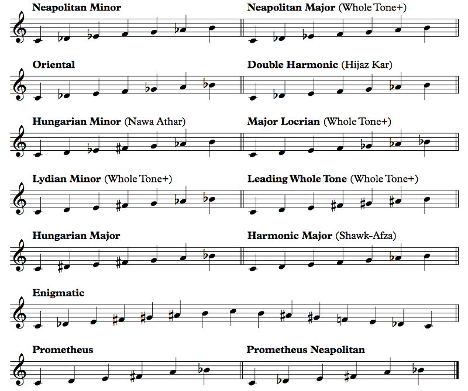Example 7.98
It's definitely worth investigating the harmonic possibilities of these scales and whatever else you may dream up. The Neapolitan chord is the bII, so, for whatever reason, Persichetti calls scales with a b2 "Neapolitan". I'd personally call them "phrygian", but to each his own, I suppose. A few of these scales we've already seen under Arabic names, which I listed. Four of these happen to be modes of what I'm calling the whole tone+ scale, which is a whole tone scale with an added note (it doesn't matter which; the scale is symmetric). Neapolitan major is what happens when you start the scale on this added note; major locrian adds the 4, lydian minor adds the 5, and leading whole tone adds the 7. You could certainly add the b2, b3, or 6 instead and have other scales. In fact, you can take any of these and make modes out of it. Hungarian major is a bit interesting because it's actually the half-whole diminished scale without the b2.
The enigmatic scale is an odd duck. When I first saw it in Persichetti's book, I thought the name referred to its sound, which maybe someone thought was mysterious-sounding somehow. Turns out the enigma is more mundane: it was a challenge in a 19th century musical journal in Milan — an enigma for someone to solve by harmonizing this scale and composing something with it. Giuseppe Verdi did just that with his Ave Maria sulla scala enigmatica. The video has the score, and you can see that his harmonies are actually standard, but one voice of the choir constantly sings the enigmatic scale up and then down in whole notes as a cantus firmus — a slow fixed melody around which harmony and counterpoint happens. The scale itself is meant to be awkward, and for some reason it has a descending form that's different from the ascending form. It's supposed to be not very musical; it lacks a fourth and a fifth; it has an augmented second; it has consecutive semitones. I think Verdi's use of it as a cantus firmus is a total copout. That said, I think more modern composers would have no problem writing music in it, mostly because if it sucks they can just call it modern music and people will nod and marvel at the genius who could conceive of this music that their own puny minds can't comprehend but really it just sucks. Or it might actually be good. You try it!
As for the hexatonic Prometheus scale, we talked about it as a chord in the last chapter in the context of Scriabin's music, but it can be put to general use as a scale. Prometheus Neapolitan is just the b2 variant of the scale. Prometheus itself is a subset of whole tone+, where the + is the 6 and the #5 is missing, and Prometheus Neapolitan is a subset of the half-whole diminished scale (missing the b3 and 5).
While I'm kind of presenting these scales without much comment, there's a general approach to synthetic scales and understanding them. The puzzle here is how to compose good music (whatever that means for you) using these scales. A more traditional composer would just... not use them, probably, unless there was a good reason. I don't know much about Hungarian music, but I'm assuming it really does use the so-called Hungarian major and Hungarian minor scales in some way. I wouldn't call that "synthetic". The Western approach to new scales is to figure out what chords can be built from the scale degrees, where the leading tones are, how you can tonicize different bits of the scale, etc. The Offtonic Scale Keyboard is pretty helpful in doing this since you don't have to think about playing the right notes; you can just noodle around until you come up with something interesting. You can do this to figure out what notes are stable, what notes are dissonant, etc., since that's going to vary from scale to scale.
The other thing you can do is create modes (in the sense of starting the scale on a different note) out of these scales. The scales labeled oriental, double harmonic, and Hungarian minor are all modes of each other, as are obviously the whole tone+ scales. But you can play the modes of any of these scales if you feel like it.
Most likely it will be difficult to structure an entire composition around one of these scales. There are reasons why the Western world has coalesced around major and minor and not, say, the enigmatic scale. On the other hand, it's probably not too difficult to pull it off for just a couple of measures of a larger work, where dissonances can be resolved in a different scale.
Shifting gears a bit, Persichetti also lists some pentatonic scales. These are used quite a bit in Japanese and Indonesian music, and they're awesome. The names, though, are a bit confused. Persichetti's names are not necessarily the right ones, but people don't entirely seem to agree, so take the names with a grain of salt. We've already seen the pentatonic scale (1 2 3 5 6 and its modes) several sections ago in this chapter, so here are four more usable pentatonic scales, built on a similar formula, along with their modes:
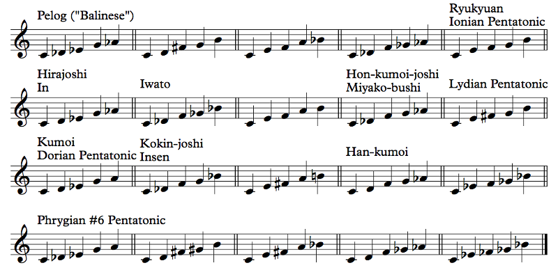Example 7.99
I put only the first mode of each of these scales in the Offtonic Scale Keyboard, but you should be able to play the other modes easily from that; the names I used are Balinese, Hirajoshi, Kumoi, and Phrygian #6 Pentatonic.
It was taken. This scale is much more dorian pentatonic than the 1 2 4 5 b7 scale that has the name now, but what can ya do.
The diatonic pentatonic scale (1 2 3 5 6) has just two types of steps: 1 to 2, 2 to 3, and 5 to 6 are major seconds, and 3 to 5 and 6 to 1 are minor thirds. These scales, on the other hand, have a richer variety of intervals. The Balinese scale (which Persichetti calls Pelog, but Wikipedia calls other scales by that name) has two minor seconds (1 to b2, 5 to b6), a major second (b2 to b3), and two major thirds (b3 to 5, b6 to 1). Hirajoshi has the same intervals, though the minor second is from 2 to b3 and the major second is from 1 to 2. Kumoi has a wider variety, with both a major third and a minor third, and phrygian #6 pentatonic is similar.
The other intervals are also interesting. Notice how the diatonic pentatonic scale is well-behaved; it has fourths and fifths but no tritones. The Balinese scale does have a tritone, b2 to 5; Hirajoshi has 2 to b6; Kumoi has b3 to 6. While the diatonic pentatonic scale is the diatonic scale minus the tritone, the characteristic tritone is preserved in these scales. The odd one out, for which I'll have to admit right right now that I made it up myself, is phrygian #6 pentatonic, which only has a name because I needed to put it into the Offtonic Scale Keyboard somehow. This one is not a subset of the diatonic scale. It seems like it has similar intervals to the other scales so it should be OK, right? But no. It has two tritones, b2 to 5 and b3 to 6, but that doesn't matter; we love tritones, don't we? No, the problem is the augmented fifth from the b2 to the 6. That is a killer.
I made a special point of talking about these pentatonic scales because the Japanese and Balinese music that uses them is often atonal, using these scales without a central pitch at all. This makes all of the modes equivalent, and it makes it so that if multiple pitches are tonicized, that's... actually nice; it doesn't destroy the feeling of the mode. That said, some positions do come up more often. Lydian pentatonic, for example, is often used in creepy music in Japanese videogames. Iwato and Insen are more... traditional-sounding, in a way. I hear them in settings that are traditional Japanese. (As a jazz chord, Insen is the susb9 phrygian chord; we talked about this in the last chapter.) Let's hear some examples, shall we?
The first example is a short theme from Hirokazu Fukushima's Chant for "DOSOZIN" (the clearest statement is at about 3:42):
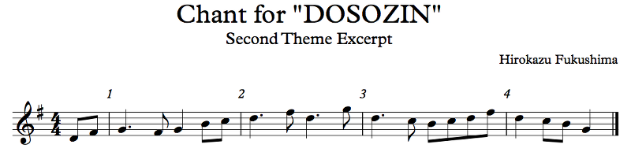Example 7.100
The piece also has various motifs in this scale, but most of the time, the piece doesn't stay in the scale. I'm going to blame it on Western influence...
...Specifically, the Western influence that led to the creation of Japan's wind ensemble program, which was based in large part on the band program in Florida. One of my band directors in high school was actually involved with it (he left partway through to run a publishing company to distribute the music of Japanese wind ensemble composers in the US, including this piece), and Frederick Fennell himself went to Japan to work with the Tokyo Kosei Wind Orchestra and raise the profile of the wind ensemble medium in Japan. We got to play a lot of great Japanese music in high school. On the downside, we got to hear about these bands of 6th graders that could play our music better than we could, and we were one of the top wind ensembles in the state. And we got to hear about how Japanese schoolchildren clean their own school and we don't, how they have respect and we don't, how they practice and devote themselves to the ensemble and the music and we don't, etc. You know how that kind of thing goes. But the music, top notch.
This particular excerpt is short, but I think it well captures the spirit of ionian pentatonic. You definitely hear the tritone outlined. You also have an interesting feature that we'll see in other Japanese pentatonic music, which is that the note that you might think is the leading tone doesn't actually resolve to the note that you might think is the tonic. In this example, it's the F#. The low F# at pickups to 1 and 1 itself does go up to the G, but the high F# goes down, not up, at 2 and 3. You could argue that the F# at 2 does resolve up to the G at the end of the bar in a somewhat delayed resolution, but I don't hear it that way because the D in between them is the half cadence of the phrase. The F# resolves down to the D and concludes the first half, and then the G begins the second half with a new thought.
This example is also entirely tonal, with G as the clear tonic. The next example is less so, and it's the most famous Japanese folk song known around the world, emblematic of Japan similarly to how Arirang (Example 7.38) is emblematic of Korea, Sakura Sakura (here's a recording):
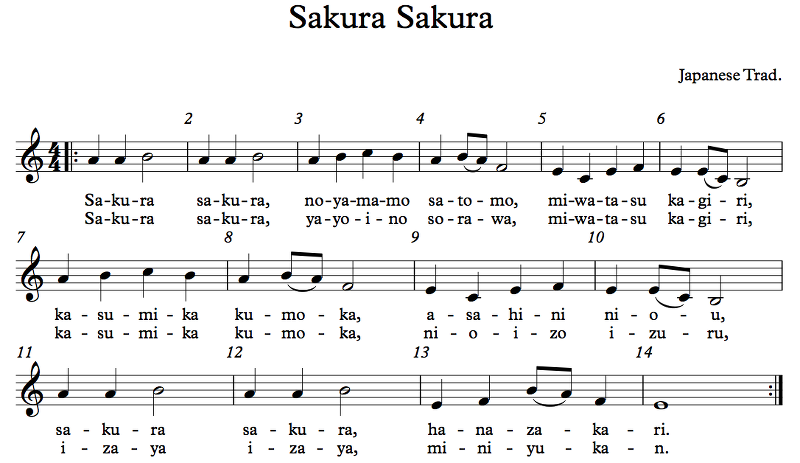Example 7.101
This song is in the In scale, but not in a particular mode of it. Taking the scale here as A B C E F, the tonal center appears to be A at the beginning, but the cadence is to F. I think the F resolves to the E at measure 5, but then that cadence is to the B, which resolves to the A an octave up at 7. The final cadence is to E. You could see this as E F A B C or A B C E F or something else. The music doesn't clearly choose one.
'Tis. The Japanese language works on a system of morae (called on in Japanese), not really syllables, where some syllables are actually counted as two morae in poetry and speech. The N sound is its own on, but not its own syllable. In Yiddish, consonant sounds like N and RL also get their own syllables sometimes.
You can also get atonal in the Balinese scale. These pentatonic scales are sometimes used in videogames for extreme creepiness. I won't transcribe these examples, but you should listen to them. One example is in the Balinese scale, and it's the extremely unsettling Celebration, from Hiroki Kikuta's soundtrack for Secret of Mana. The other is in the In scale, and it's the also extremely unsettling Lavender Town, from Junichi Masuda's score to Pokémon Red and Blue.
The Secret of Mana track was directly inspired by Balinese gamelan music. I don't think gamelan music is particularly creepy in general, but if you've played Secret of Mana, which despite the horrible, horrible magic and leveling system is actually a fantastic game (well, the setting is fantastic), the particular situation for this so-called Celebration is CREEPY AF. I don't want to spoil it, but... About Lavender Town, I actually haven't played Pokémon (yeah, I know), but my understanding is that Lavender Town is noted for its graveyard. The common link between the settings for these two pieces is that they're both heavily influenced by Japanese mythology and also very dead. This is not your Western scary music.
I could go on with the videogame music. For example, Golden Sun 2's Izumo in Despair uses the Insen scale, and it's also definitely meant to be a Japan-like town (the other towns in the game are modeled after other places). I have to say, I didn't really like Golden Sun much, but some people do.
One more example of these Ja(v|p)anese pentatonic scales, which I've transcribed below, is something I've been looking forward to all chapter: Super Mario Odyssey's Bowser's Castle 2 (I'm not sure who composed this one in particular, but composer credits are shared between lead composer Naoto Kubo, Shiho Fujii, and the great Koji Kondo). The setting here is amazing, and I don't want to spoil it if you haven't played it (which you should). The excerpt below is from the brutal flute feature (well, shakuhachi). If you think of flutes as meek and charming little instruments, I got news for ya:
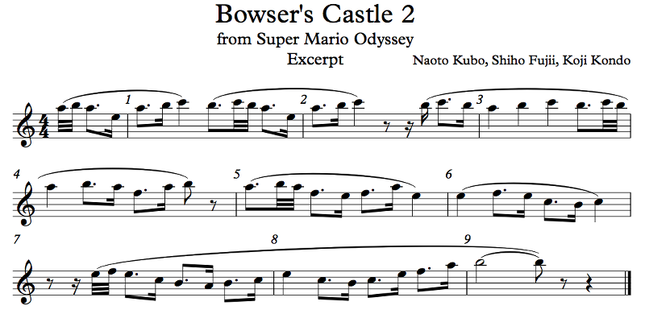Example 7.102
This one's also not very tonal, but the rest of the piece, especially the brass, makes it clear that the tonal center is really E. Listen to the harmonies as well and see if you can figure out where the points of stability are — thanks to the use of harmony, they change. In the first two bars, the stable point is A; in bars 3 and 4, it's F (thanks to the F major harmony). Measure 5 can't really harmonize with the G in the harmony since that's not in the scale; bar 6 runs with that dissonance and heads towards the B in measure 7 despite the harmony being F; you could argue that C is the most stable in that measure. In measure 7, we get back to the tonic chord, E, and the melody just noodles around it, with B and E as stable points.
I mentioned harmony, and that's actually quite relevant because, unlike Arabic maqam music, Japanese pentatonic music is harmonized. (Balinese gamelan music... Different situation there entirely. You should do your own research into it if you're interested; it's fascinating.) The scales provide a multitude of options for interesting harmonies as well as fourths and fifths. In the In scale we've been playing with, E F A B C, E can be consonantly harmonized with A or B; F with C; A with E; B with E; C with F,. The diatonic pentatonic scale has similar harmonization potential; in a C D E G A scale, you have C with G; D with G or A; E with A; G with C or D; A with E.
We dived fairly deeply into the Arabic maqamat, but we've barely splashed the surface of Japanese traditional music. If you're interested, you should do your own research. What I think is cool is the different conceptions of modality we're seeing; in the Japanese music we've listened to, the concepts of tonic and dominant that we've seen in other musics is secondary to the scale itself. Compared to that, gamelan music is... different. Different from anything else we've seen. As different as a starfish is from a fish. I strongly encourage you to learn a little about it.
Shifting gears a lot, let's talk about the ancestors of our Western major and minor modes, the Gregorian modes. There are some misconceptions about these, mostly due to the fact that they are not the diatonic modes we saw near the beginning of this chapter despite having the same names and scales.
It's really not, and you'll see why. Here are the modes:
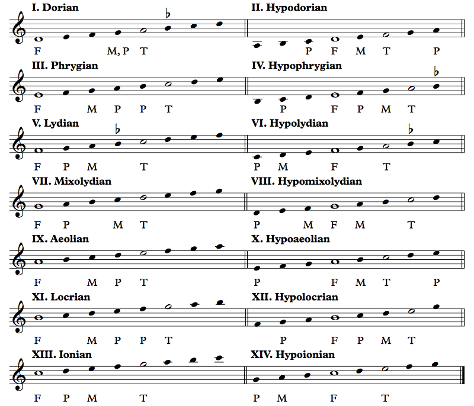Example 7.103
Of these, modes I through VIII were actually used in Gregorian plainchant, which was monophonic — just one melodic line, with everyone singing exactly the same thing together. To be clear, "Gregorian" refers to a specific canon of chants said to be recorded by Pope Gregory I; the generic term for the musical form is plainchant. Polyphony came later and was instrumental (get it?) in collapsing these eight modes to just two, major and minor. Which were not part of the original eight. The system was extended in Renaissance times to include fourteen modes basically to be consistent, but the modes that were actually used were the first eight. The odd-numbered modes are authentic and the even-numbered modes are plagal. We've talked about the distinction at the start of the chapter.
The letters are what really define the mode. The F is the final or finalis, the equivalent to the tonic of more modern Western music. The T is the tenor (also dominant, cofinal, recitation tone), and it's the secondary point of stability in the mode, much like the ghammaz of maqam music. The word "tenor" comes from "tenere", meaning "to hold", and the idea is that when there's a long line of text to be chanted without a melody, it's chanted on this note. The M is the mediant, the next level in the hierarchy of stability before the tenor, and the P's are participants, functioning as auxiliary tones. It's important to note that everything other than the final is ex post facto — it was thought up by theorists analyzing melodies written in these modes, not necessarily by the plainchant composers themselves.
As for the flats, in some modes, B can be flat. The Gregorian scales in the Offtonic Scale Keyboard have these notes when the root is C. No other accidentals are allowed in the traditional plainchant. Later on, the F# was also added, and eventually flats and sharps became a common feature, but in Gregorian plainchant, it's B flat or B square.
Funny you should say that (ha ha ha) because "B square" is literally what B natural was called in some languages; the natural sign in Portuguese, for example, is called a "bequadro". B flat was denoted by a rounded b which evolved into the flat sign, and it was known as the soft B, and B natural was a b written in a more square-looking font, known as the hard B. German-speaking people apparently thought this square B looked too much like an H, so to this day, B is the German name for the note we call B flat and H is their name for the note we call B natural.
Very good question. The main difference is that lydian existed and major did not. It was called ionian, not major. Ionian also didn't exist. The other difference is the ambitus, or range. There was no Bb lydian or D lydian or whatever; there was just the lydian mode and it was on F. And the hypolydian mode, which was also on F but had a different ambitus. Music in the lydian and hypolydian mode always ended on F, the final. This actually made the lydian mode somewhat cheerier than, say, the hypodorian mode, which had a much lower ambitus, way down from low A. I wrote these modes in treble clef, but I probably should have used bass or tenor clef since these were mostly sung by men. Except when they were sung by women, because Catholics have nuns.
Now, Gregorian chant and similar plainchants were originally written in an ancestor to the music notation we use today called neumes. I'm not going to explore them in depth here, but you can check out this guide or a book called Chants of the Church published by the Gregorian Institute of America, of which you can find a PDF here and many more resources at musicasacra.com, the website for the Church Music Association of America (CMAA). Reading neumes is surprisingly easy, and people do still read them today.
They even make things easy for us, who are trying to analyze the modes in plainchant. At the start of a modal piece (which not all chants are, by the way), the number of the mode is usually printed (I for dorian, II for hypodorian, etc.). Again, I should emphasize that Gregorian plainchant has only eight modes; the other six are more recent (Renaissance-era) extrapolations, which you should still know about but not in the context of the traditional plainchants. And even then, not everyone accepted locrian/hypolocrian as modes, so modes XI and XII were sometimes ionian and hypoionian, respectively. Oh, and at some point people tried to renumber the modes and rename them for some strange reason, so things got even more confused. Check out this video on Modes in the 16th and 17th centuries by Early Music Sources for the story. But when it comes to the Gregorian plainchant we're looking at, there were the eight and that was it.
The CMAA website has a very interesting book, labeled Textbook of Gregorian Chant, by Dom Sunol (1930) (look under Teaching Aids, For general use), which, on page 40, has singing exercises in all eight modes. There's also quite a bit of theory regarding the Gregorian modes, as you can see from the selection of books available on that website, which shows that the situation is not quite so simple as the eight modes make it out to be. There is the possibility of transposed modes, allowing A, B, or C to be the final (yes, even B), as well as modulation. And since the chants generally have the modes actually listed, they leave the guesswork out of figuring out which mode it's in, which also means that the piece may not match the mode number exactly. The hierarchy of final, tenor, mediant, and participant is theoretical rather than practical, and different theorists may disagree on how to properly analyze the chants, so they aren't necessarily evident in pieces in a particular mode.
Let's look at some examples. In these examples, I'm taking the notation from the book I mentioned above, Chants of the Church, which may not be exactly how the chant is performed, especially in terms of rhythm. In fact, if you look for examples yourself, you'll see that quite a few performances of these chants add harmonies and polyphonies. There's a very long tradition of harmonizing plainchant, but then it's no longer plainchant, is it? I've tried to find non-harmonized examples in each of the eight modes. We'll go in order.
So let's begin with Mode I. This is a chant for Ave Maria:
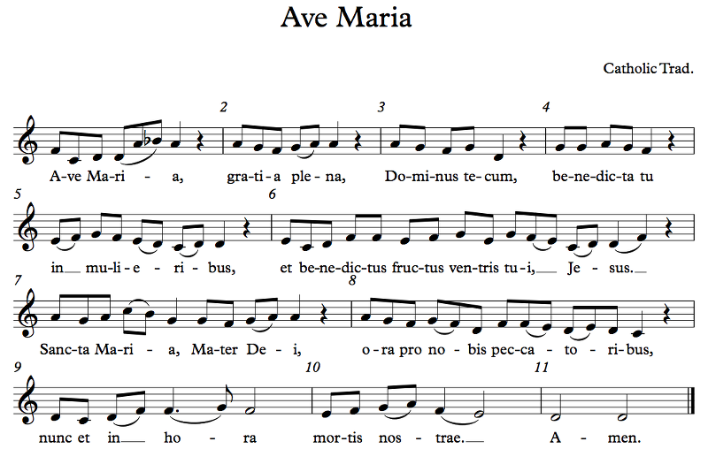Example 7.104
As you can see, it ends on D, the final of the mode. However, unlike the modern dorian mode, the Gregorian Mode I has no problem with the Bb, as you can see in the first measure, but neither does it have a problem with the B natural, which appears in measure 7. It's also useful to look for uses of the tenor, A, and the mediant, G. We see the tenor in play in the first three measures, with the A as a recitation tone that keeps recurring (measures 1 and 2); the G leading to the D in measure 3 demonstrates the role of the participant. On the other hand, the F sounds more like a recitation tone for the rest of the piece other than measure 7, playing the role of mediant. So the chart in Example 7.103 is pretty much useless as a prescriptive table, but it does analyze real musical phenomena that are simply not quite ubiquitous.
Next is Mode II; this one is Maria Mater gratiae. You can see the neume notation in the video; the links above will easily show you how to read it (it's really not complicated):

Example 7.105
Well, you see, it's actually in hypodorian, transposed up a fifth. (The video sings it a bit lower, actually, but that's OK.) Hypodorian goes very low, so in the chants I've seen, it's most commonly transposed up. This makes the final A, tenor C, and mediant B. The C is used as a leading tone to the D, a participant. The C isn't doing much tenoring, except at measure 4, I guess; the mediant is used for the half cadence in measure 1. Note also that, despite the fact that this is plagal dorian, the melody rarely actually goes below the final. This is OK; the center of activity is above the final here, but only just; in our authentic dorian example, the nexus was a few steps higher (relatively speaking, anyway).
Gregorian chant actually has four different kinds of bar line, to denote different levels of separation (a feature it shares with Jewish cantillation of the Tanach, by the way, though obviously it works differently there). You can see three of them in the video, the half bar line, the full bar line, and the double bar line. There's a fourth one that's even lighter than these three, which is just a hash mark on the top line of the staff. Well, other than these, plainchant is not measured. There is rhythm, and the resources I linked above will explain how the rhythm works in far more detail than you want to know, but the meter is free. So I added bar lines where the original notation puts them, but there wasn't really any opportunity for more bar lines than that because the phrases in this chant are long and unbroken.
Here's Mode III, with a hymn called Pange lingua:
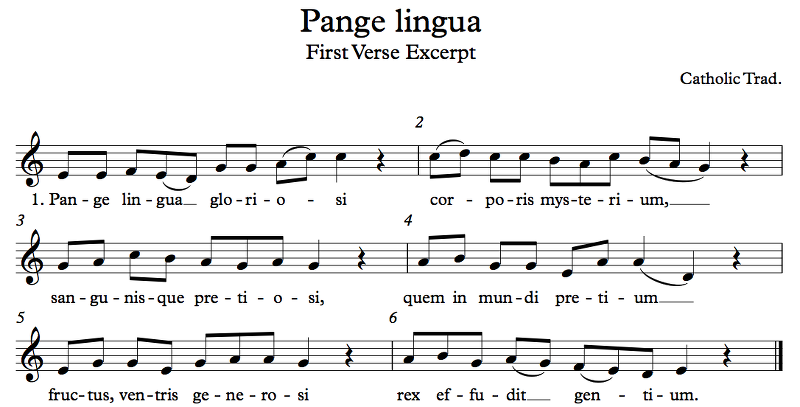Example 7.106
Phrygian has the final on E, tenor on C, and mediant on G. We can actually see these in evidence in this melody. Why the C and not the B? Because B, as a note, is unstable — it could be Bb, which is dissonant against the E, or B natural. Where else have we seen an variable B?
That's right. If you go through the list of maqamat, you'll find quite a few where the B changes depending on whether it's ascending or descending, like maqam Bayat and maqam Rast, just as basic examples. In maqam Siga, you'll recall that the Ed is the tonic, the G is the ghammaz, and the C is a secondary center — essentially, G is the tenor and C is the mediant. Well, the same thing is happening here in the phrygian mode, except with the roles of tenor and mediant switched, which is an academic distinction anyway. Of course, we don't analyze Gregorian chant with ajnas the same way we analyze maqam music (there are still tetrachords and pentachords similar to what we saw way back in Example 7.10, but they don't play the central role that ajnas do in maqam music), and the character of these melodies is decidedly different from the character of the Arabic melodies we heard. Also, Gregorian plainchant doesn't use quarter tones. It probably should; that would have been cool. But it doesn't.
For Mode IV, there were actually a few chants with B as the final. This isn't one of them, but be aware that it's a possibility! This is Subvenite Sancti Dei, from the funeral service:
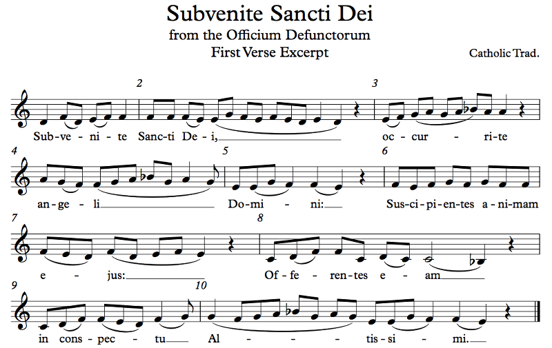Example 7.107
You may have noticed that the video is a fourth higher. You know why? Because the music goes too low, and the guy in the video is singing by himself, so there's no need to match anyone else's pitch. I transcribed the original chant (well, the one in the book, anyway), not the recording.
Mode IV has the final on E, tenor on A, and mediant on G. We can see the tenor behavior in measures 3 and 4. On the other hand, the modal behavior is less clear from 8 to the end. If you didn't know that this is mode IV, you wouldn't know that the final was going to be E. In tonal music, that doesn't slide, but in modal music there's no issue. The mode is defined by the ambitus and the final; the ambitus is low and the final is E, so this is mode IV and there's all that needs to be said. In tonal music, we'd be talking about what notes have what tendencies. The low B goes up to C then D then E; the high B goes down to A, G, F, and E. But this isn't tonal hypophrygian; it's modal. And that means that measure 8, which could really be centered on C, D, or F if this were tonal, or even Bb, is still legitimately in this mode. Later music would never allow a cadence on Bb in a piece whose tonic is E, but it's totally legit in Gregorian chant!
Well, what about rule 0? You can do whatever you want in music. That doesn't mean that church composers also had that freedom. In fact, church music had to be accepted by a range of authorities, and on occasion even the Pope himself weighed in. There were movements to unify modes, reduce melisma, change rhythms, stuff like that, because the authorities wanted the church music to be a certain way. Interestingly enough, when J. S. Bach was a church organist in the 18th century, in Protestant Germany (well, it wasn't Germany yet, but still), he did get to Rule 0 all over the place, and we ended up with his brilliantly chromatic church music that would have made Pope Gregory roll in his grave.
All of them? I don't know. I'm Jewish; give me a break. We didn't study Papal history in Hebrew school!
Next, Mode V! This is Tantum ergo:
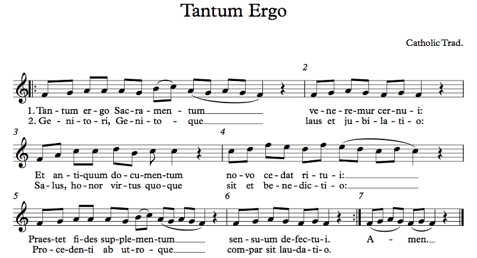Example 7.108
This is pretty similar to modern lydian, honestly. Final is F; tenor is C; mediant is A. And that's basically what happens. Piece goes to the mediant then back down. Piece goes to the dominant. Piece repeats the first bit. But remember that the B is variable, so while this particular piece uses the hard B, other pieces in this mode can certainly use the soft B if they so choose.
Another interesting aspect of this piece concerns the text. The other pieces we've seen so far have groups of 2 and groups of 3, but this piece only has groups of 2. The text is very clearly trochaic, meaning that it has a strong-weak duple pattern. The music mostly keeps this pattern, except that it makes the final syllable of the first half of each line also a strong syllable. Interestingly, the first and third lines of each verse are identical in melody, but the second line has a different melody and rhythm despite having a text with exactly the same metrical and rhyming patterns as the other two lines of each verse. Finally, if this were tonal music, measure 4 would have been a modulation to the dominant; in Mode V, though, that's just the way things go!
Here's an example of Mode VI, Laetabundus:
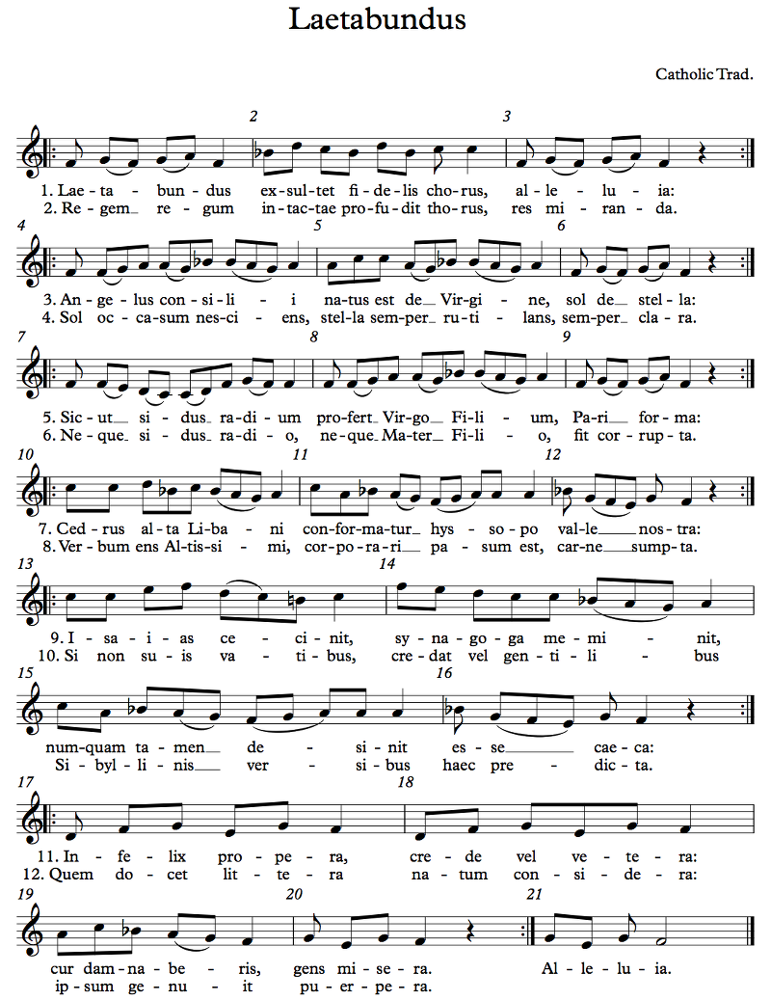Example 7.109
I like the structure of this one; it's in couplets, each one with the same melody for both lines. Every line ends with a short phrase; the first eight verses have two stichs before the short phrase at the end, and the last four have three. This kind of variety and symmetry allows for some music that's not as repetitive but still unified.
As for the modal characteristics, Mode VI has the F as the final — yep — the A as the tenor — not really — and the D as the mediant — definitely not. Only verses 5, 6, 11, and 12 even approximate this structure, and we go right into Mode V territory with the high F's in verses 9 and 10. So why is this in Mode VI? Well, because it says so. Also, the ending of the piece is the most significant part when it comes to determining mode, and that section of the piece, which consists of verses 11 and 12, really is in the mode advertised. What this shows is that there's actually considerable freedom in plainchant; one can even modulate, though this doesn't involve changing any notes since the scale is set.
Next is Mode VII, and the piece is Ecce panis Angelorum:
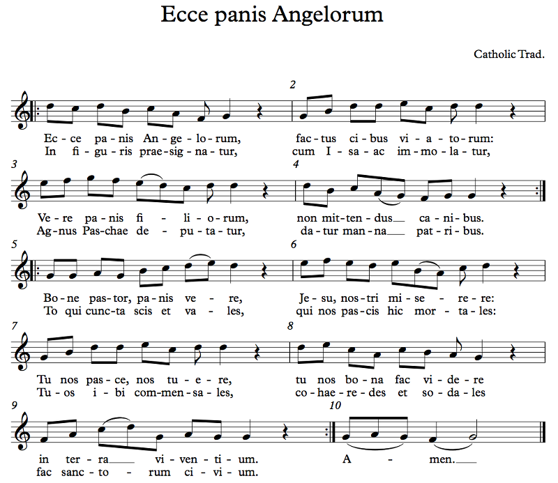Example 7.110
This hymn's structure has four stanzas; the first two have 3 + 1 lines each, and the last two have 4 + 1. There are two main things that set the last line in each stanza apart. The obvious one is the rhyme; the other lines rhyme with themselves, but the last line in each stanza rhymes with the other last line in the stanza pair. The other thing is the meter; the other lines have eight syllables while the last lines have seven. This changes the emphasis of the final syllable; the other lines end on a weak syllable while the last lines end on a strong syllable.
In terms of mode, this is pretty similar to our modern mixolydian mode. The final is G, tenor is D, mediant is C (not B because B is unstable). The tenor/final relationship is very clear here, with the cadences all either on D (half cadences) or on G (full cadences). The D is stable but unresolved; the G is the resolution. Also note the role of the F as leading tone, a note that is also called the subfinal or subfinalis; the authentic modes have an ambitus where the lowest note is the final, but the subfinal is routinely used in modes I, III, and VII, though not V for some reason. In this piece, F major triads are outlined before some cadences, and G major triads are outlined at the start of some phrases. Don't be mistaken: triads did not exist at the time of this music. Even major thirds were not considered consonant.
Take a look at the Gregorian scales in the Offtonic Scale Keyboard. I included three tunings: 12-TET, 53-TET, and Pythagorean. Now, 53-TET was certainly not used in the era of plainchant. The mathematics hadn't even been developed yet. In fact, the mathematics for 12-TET is the same, so it hadn't been invented yet either, not to mention that 12-TET makes no sense in a system with only 7 notes (well, one was variable). What people did understand were perfect fifths and fourths; a perfect fifth has a 3/2 ratio and a perfect fourth is the ratio between that 3/2 fifth and the octave (2/1 ratio), which is 4/3. If you build a scale based on these ratios, you're using Pythagorean tuning. While Gregorian plainchant wasn't necessarily tuned very precisely (they didn't exactly have electronic tuners available), the tritone was considered melodically dissonant (no, not the Devil's Interval; we've talked about this in Chapter 5), and the variable B was meant to turn that tritone into a fourth or fifth depending; E to B is a fifth, and Bb to F is a fifth. This means that you can create a circle of fifths using these notes: Bb → F → C → G → D → A → E → B.
No, not in modern terms. But Bb and B were two versions of the same note, so if you loosen your standards a bit, yeah, that's a circle.
The upshot is that the major third sounds terrible in this tuning. You can try it yourself. If you play the 12-TET version, you get the ordinary slightly-out-of-tune major third, which sounds OK in a major triad, but if you play the 53-TET or Pythagorean versions, it sounds pretty bad. In order to make the major third sound consonant and playable, you need to use the 5/4 third we talked about back in Chapter 5 instead of the Pythagorean third. But then you have a problem, because C → G → D → A → E is now no longer a chain of perfect fifths. There have been many solutions proposed, all of them compromises between keeping an in-tune perfect fifth and an in-tune major third. 12-TET is a particularly great compromise for a number of reasons. 53-TET doesn't work at all for this because it's so damn close to Pythagorean; I honestly couldn't notice a difference when I switched between them (but I checked the frequency values and they are different, so I know it's not a bug). If you drop the major third by a comma, which is called a syntonic comma in Just Intonation but it's just one step in 53-TET, you get the nice-sounding 5/4 major third (check maqam Ajam in 53-TET), but you still lose the chain of fifths. When the major third became consonant, detuning the fifths became a valid compromise. Before then, there was no reason to do so.
Anyway, we now move on to the last mode, Mode VIII; this piece is Veni Creator Spiritus:
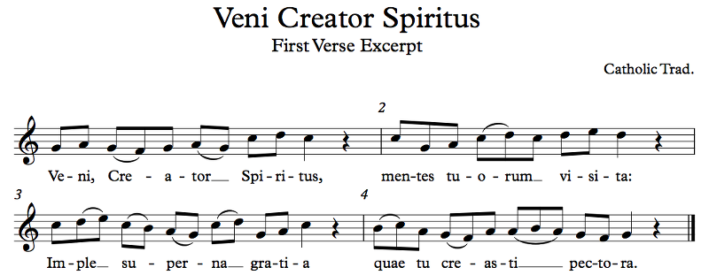Example 7.111
Doesn't really sound plagal, does it? But the final of Mode VIII is G, tenor is C, and there are two mediants, F and A. The fact that we have two cadences on C suggests C as the tenor rather than D, despite the one cadence on D. To our ears accustomed to tonality, the first three phrases strongly suggest C as the tonal center, but we have to remember that plainchant is not tonal; this chant ends on G and therefore it's in either Mode VII or Mode VIII. And Mode VIII is what's written, so that's what it is; pretty simple, really! Actually, some chants in Mode VIII do have C as the final; they are in a transposed version of the mode.
Since motion by step was the norm in plainchant, we can also classify the modes by what happens immediately around their finals. D, G, A, and C have a whole step on either end (taking A - B and Bb - C), E, A, and B have a whole step below and a half step above (taking A - Bb), and F and C have a half step below and a whole step above (taking B - C). This neighborhood is one of the defining features of the modes in plainchant, and it's why transposition works. There's really no difference between ionian and transposed mixolydian, since mixolydian uses B rather than Bb; so long as you use the Bb in the transposed mode, they're the same. Later theorists and composers did want the new scale that results from the intervals of the ionian mode, though, so the introduction of ionian was not just a formality. Similarly, aeolian is just transposed dorian without the option of using B natural, using only B flat. Locrian is a different animal, though.
I just want to clarify something about the hypolocrian mode. If you look back at Example 7.103, you'll see that the top note of this mode is a G, skipping the F entirely. You may think it's a typo. It looks like a typo. But it is not. Theorists didn't want the top of the ambitus to be such a dissonant tone. That said, the locrian and hypolocrian modes were the last modes added to the eight-mode system, and I don't know how much it was actually used in real life.
For completeness's sake, here's a piece in Mode IV that has B as the final, from the Easter mass, Sanctus (Lux et origo):
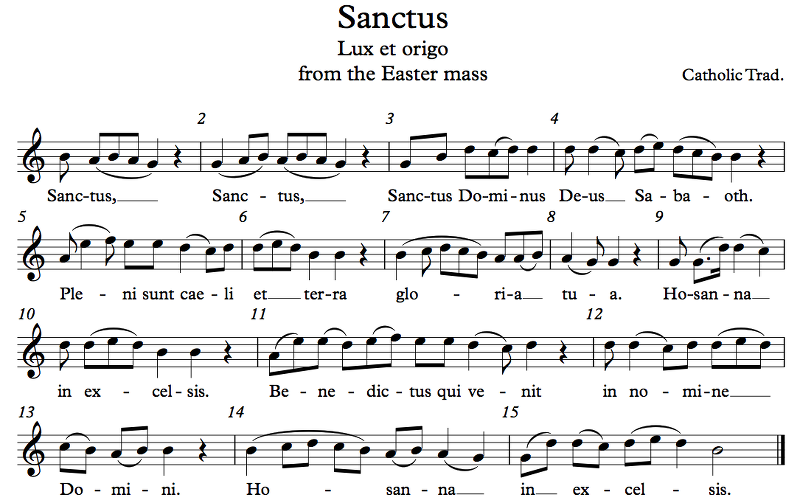Example 7.112
If this were tonal, which it's not, but if it were, it would clearly be in G major (well, G mixolydian, but same thing). It's just that the cadences are mostly on B. Just going through, the cadences are on G, G, B, B, G, B, D, B, B. If it weren't for the final cadence on B, this would be Mode VII. But the final cadence is on B, so it's Mode IV, transposed. Why IV? Because B is similar to E in that there's a note a whole step down and a half step up, and E is the only final with this property of the four possibilities (D, E, F, G). Why not III? Well, that's easy: the melody spends a lot of time below the final.
There's much more we could discuss about plainchant. The resources at the CMAA site I linked above discuss it in quite a lot of depth, if you're interested. There's much more we could discuss about the Gregorian modes. There's even more we could discuss about the transformation from modality to tonality, which took place over a few hundred years around the Renaissance, involving modal polyphony at first and coalescing those rules into the behaviors we're familiar with in tonal music. We may even do this much later on once we understand how tonal polyphony works. It's frankly fascinating. For now, though, we must end our catalog of modes and scales. There's much, much, much more out there in the world. We briefly mentioned Balinese/Javanese music; the inventory of notes used in gamelan music in those cultures is completely unlike what we've talked about so far. Indian music, both north and south, is also an enormous subject that involves a wealth of modes called ragas that are far more than just scales. We talked about Arabic maqamat, but Iraqi maqamat are different, as are Turkish makamlar, Persian dagstah, the shashmakam system of central Asia, the weird microtonal scales of Eastern Europe (look up Istrian music), and, speaking of microtonal scales, there's a literally unlimited number of possible scales if you admit microtones, and there are even scales that ditch octave equivalence altogether and use the tritave instead, like Bohlen-Pierce. The tritave is a ratio of 3/1, which in usual terms is about a perfect twelfth (an octave plus a fifth). The range of musical materials that is possible is unlimited.